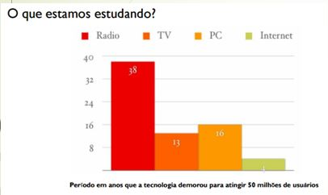
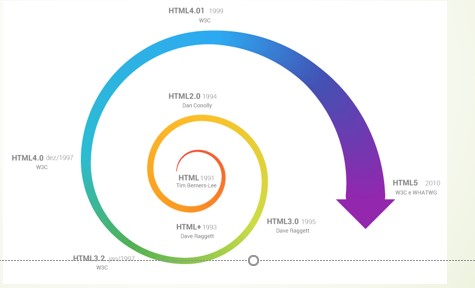

Introdução ao HTML
Saiba mais sobre o html aqui
HTML (Hyper Text Markup Language) é uma Linguagem de Marcação de Hipertexto utilizada para criação de páginas da Web. Essa é a linguagem que o seu navegador (Browser) decodifica para exibir as páginas.
O que é HTML?
Saiba mais sobre o html Aqui
HTML é a linguagem de marcação padrão para a criação de páginas da web
- Hipertexto pode ser definido como todo o conteúdo o qual se encontra inserido em um documento para a web, sendo que sua principal característica seria a possibilidade de se interligar a outros documentos também na web
- O HTML é baseado no conceito de Hipertexto. Hipertexto são conjuntos de elementos – ou nós – ligados por conexões. Estes elementos podem ser palavras, imagens, vídeos, áudio, documentos etc.
<Breve Histórico da evolução do HTML

Desde a invenção da web em 1992 por Tim Berners-Lee, a HTML evoluiu a cada versão lançada, sendo a versão mais atual a HTML5

introdução ao csss
como ja vimos anteriormente, as CSS são as Cascading Style Shets
(Folha de estolo em cascata). Elas são usadas para confugurar um
resultado visual dos elemento HTMl. As configurações Das CSS São
realizadas através dos seletores. vamos ver a anatomia de um seletor.
Tipos de CSS
- Inline- by using the style attribute inside HTML elements
- Internal- by using s style element in the head section section
- External- by using a link element to link to an external
CSS file
conheça um pouco sobre javascript